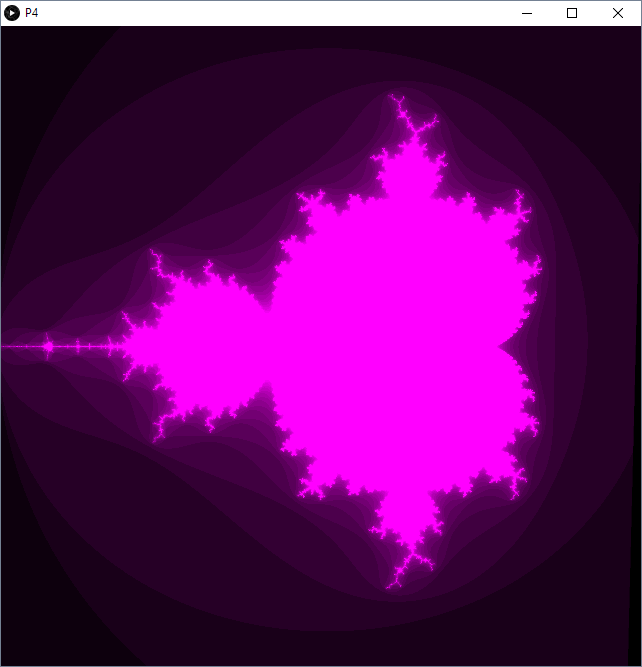

GPU Programming
Controls:
1-9: Change height map input
Mouse: Change view
Concept:
A simple program that displays four rendering tasks using GPU fragment and vertex shaders. On display is a Swiss Cheese with transparency on a fragment basis, a Mandelbrot, edge detection, and a vertex shader mountain generator.
Credits:
Processing.org
